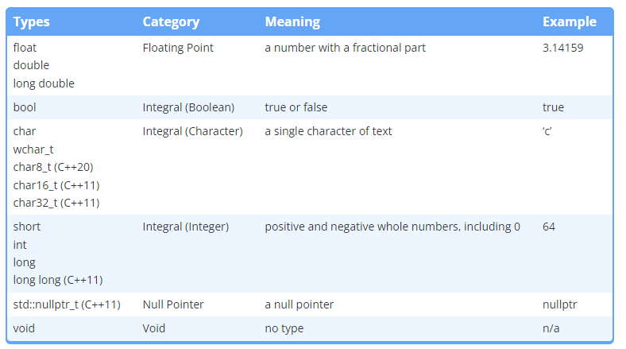

Code
#include<iostream>
void writeValue(int x)
{
std::cout << "The value is: " << x << '\n';
}Variable is a names of a piece of memory that we will store a certain type of information (data) into.
All data on a computer is just a sequence of bits, we use a data type to tell the compiler how to interpret the contents of memory in some meaningful way.
When we give an object a value, the compiler and CPU covert it to bit and store in a memory; when we consult the value, the bit is recovered to the human-readable format.
Table belows summray the data types in C++:

Void means no type. Then, a variables cannot be defined with a type of void.
void uses with function does not return value.
#include<iostream>
void writeValue(int x)
{
std::cout << "The value is: " << x << '\n';
}If we return value, compiler returns error.
#| label: typeSize
#include <iostream>
int main()
{
std::cout << "bool:\t\t" << sizeof(bool) << " bytes\n";
std::cout << "char:\t\t" << sizeof(char) << " bytes\n";
std::cout << "wchar_t:\t" << sizeof(wchar_t) << " bytes\n";
std::cout << "char16_t:\t" << sizeof(char16_t) << " bytes\n";
std::cout << "char32_t:\t" << sizeof(char32_t) << " bytes\n";
std::cout << "short:\t\t" << sizeof(short) << " bytes\n";
std::cout << "int:\t\t" << sizeof(int) << " bytes\n";
std::cout << "long:\t\t" << sizeof(long) << " bytes\n";
std::cout << "long long:\t" << sizeof(long long) << " bytes\n";
std::cout << "float:\t\t" << sizeof(float) << " bytes\n";
std::cout << "double:\t\t" << sizeof(double) << " bytes\n";
std::cout << "long double:\t" << sizeof(long double) << " bytes\n";
return 0;
}Signed integer is integer with sign operator. These are the conventional definition of interger:
short s; // short int
int i;
long l; // long int
long long ll; // long long int For floating numbers, we have the appropriate value; std::cout displays from 6 to 8 digits. We can override this format by use std::setprecision(#digits) from headers iomanip.
The precision does not only impact the fractional number, they impact any number with too many significant digits:
#include <iostream>
#include <iomanip> // for std::setprecision()
int main()
{
float f{ 123456789.0f };
std::cout << std::setprecision(9);
std::cout << f << '\n';
return 0;
}
#> 123456792In the example, 1234567892 is greater than 123456789. The value of 123456789.0 has 10 significant digits, but float values typically have 7 digits of precision, then we lost precision
Favor double over float type.
Floating point numbers are tricky to work due to non-obvious differences between binary and decimal. The fraction 0.1, in binary, 0.1 represented by infinite sequence 0.00011001100110011… Thus, we assign 0.1 to floating point number, we run into rounding errors.
Let see the following code:
#include <iostream>
#include <iomanip> // for std::setprecision()
int main()
{
double d{ 0.1 };
std::cout << d << '\n'; // use default cout precision of 6
std::cout << std::setprecision(17);
std::cout << d << '\n';
return 0;
}
#> 0.1
#> 0.10000000000001The double type guarantee precision for 16 digits, when there are more than that, there is not precision. Another one
#include <iostream>
#include <iomanip> // for std::setprecision()
int main()
{
std::cout << std::setprecision(17);
double d1{ 1.0 };
std::cout << d1 << '\n';
double d2{ 0.1 + 0.1 + 0.1 + 0.1 + 0.1 + 0.1 + 0.1 + 0.1 + 0.1 + 0.1 }; // should equal 1.0
std::cout << d2 << '\n';
return 0;
}
#> 1
#> 0.999999999999999999999999Boolean type takes only two value: ‘true’ or ‘false’. In C++, the system represents it as an integer which 0 for ‘false’ and 1 for ‘true’. If we want to print the values rather than number, we have to use the function std::boolalpha.
#include <iostream>
#include <iomanip> // for std::setprecision()
int main()
{
std::cout << true << '\n';
std::cout << false << '\n';
std::cout << std::boolalpha;
std::cout << true << '\n';
std::cout << false << '\n';
return 0;
}
#> 1
#> 0
#> true
#> falseThis is similar to the get information from user:
#include <iostream>
#include <iomanip> // for std::setprecision()
int main()
{
std::cout << "Enter a boolean value: ";
bool b{};
std::cin >> b;
std::cout << "You enter: " << b << '\n';
return 0;
}
#> Enter a Boolean value: true
#> You entered: 0We can do:
#include <iostream>
#include <iomanip> // for std::setprecision()
int main()
{
std::cout << "Enter a boolean value: ";
bool b{};
std::cin >> std::boolalpha;
std::cin >> b;
std::cout << "You enter: " << b << '\n';
return 0;
}We can create a function that return boolean value:
#include <iostream>
#include <iomanip> // for std::setprecision()
bool isEqual(int x, int y) {
return (x == y);
}
int getInteger() {
std::cout << "Enter an integer: ";
int x{};
std::cin >> x;
return x;
}
int main() {
int x{ getInteger() };
int y{ getInteger() };
std::cout << std::boolalpha;
std::cout << "Does " << x << " equal " << y << "?\n";
std::cout << isEqual(x, y) << '\n';
return 0;
}if statementConditional statement is common in programming language; they allow us to implement conditional behavior into our programs.
The simplest type of conditional statement in C++ is if statement, following the form:
if (condition) true_statement;
If statements only conditionally execute a single statement. We talk about how to conditionally execute multiple statements in lesson 7.2 – If statements and blocks.
static_cast operatorIf we want to explicitly change the type of data, we can use static_cast<new_type>(expression).1
#include <iostream>
void print(int x)
{
std::cout << x;
}
int main()
{
print( static_cast<int>(5.5) ); // explicitly convert double value 5.5 to an int
return 0;
}We can use this to covert chart to int:
#include <iostream>
int main() {
char ch{ 'a' };
std::cout << ch << '\n';
std::cout << ch << " has value " << static_cast<int>(ch) << '\n';
return 0;
}Another exercise:
int main() {
std::cout << "Please enter a single character: ";
char ch{};
std::cin >> ch;
std::cout << "You entered '" << ch << "'" << ", which has ASCII code " << static_cast<int>(ch);
return 0;
}Const variable: initialized variable with value and cannot assign different values later.
Let look the code to create a const variable:
#include <iostream>
int main()
{
const double gravity{ 9.8 };
gravity = 9.9;
return 0;
}
#> Error C3892 'gravity': you cannot assign to a variable that is constAge example:
#include <iostream>
int main()
{
std::cout << "Enter your age: ";
int age{};
std::cin >> age;
const int constAge { age };
age = 5 //okie
constAge = 6 // error: constAge is constant
return 0;
}We can set the const for parameter, but do not prefer to do that.
Constant expression is an expression that can be evaluated by the compiler at compile time.
Compile-time constant: a constant whose value is known at compile-time.
A const variable is a compile-time constant if its initializer is a constant expression.
Evaluating const expression takes longer at compile time, but saves time at runtime.
Runtime const: every const variable initialized with a non-constant expression is a runtime constant. Runtime constants are constants whose initialization values are not known until runtime.
constexpr keywordCompile always implicitly keep track of const variables to know whether it’s a runtime or compile-time const. A variable can only be compile-time const.
Let read the example:
// constexpr uses
constexpr double gravity{ 9.8 }; // ok: 9.8 is a const expression
constexpr int sum{ 4 + 5 }; //ok
constexpr int something{ sum }; // ok: sum is const expression
std::cout << "Enter you age: ";
int age{};
std::cin >> age;
constexpr int myAge{ age }; // compile error: age is not const expression
constexpr int f{ five() }; // compile error: return value of five() is not constant expressionLiterals are unnamed values inserted directly into the code. For example:
return 5;
boot myNameIsAlex{ true };
std::cout << 3.4;Like objects, all literals have type. There type is in
An example of string is "Hello world?\n"; a sequence of characters. String is not natural in C++ language. We use std::string to work with string by including the header <string> in the header
Here is an example:
#include <string>
#include <iostream>
int main()
{
//std::string name{}; // empty string
std::string name{ "Huy" }; // initialized with value
name = "Quang";
std::string myID{ "45" };
std::cout << "My name is " << name << '\n';
std::string empty{};
std::cout << '[' << empty << ']';
return 0;
}Using strings with std::cin my yield some surprises. Let see the example:
#include <string>
#include <iostream>
int main()
{
std::cout << "Enter your full name: ";
std::string name{};
std::cin >> name;
std::cout << "Enter your age: ";
std::string age{};
std::cin >> age;
std::cout << "Your name is " << name << " and your age is " << age << '\n';
return 0;
}
#> Input: Quang Huy
#> Your name is Quang and your age is HuyNormally, the >>operator only extract the string before first space, and the rest is stored for the next >>operator.
To get the full string input, it is better to use std::getline():
#include <string>
#include <iostream>
int main()
{
std::cout << "Enter your full name: ";
std::string name{};
std::getline(std::cin >> std::ws, name);
std::cout << "Enter your age: ";
std::string age{};
std::getline(std::cin >> std::ws, age);
std::cout << "Your name is " << name << " and your age is " << age << '\n';
return 0;
}The input manipulator std::ws tells std::in ignore any leading whitespace (spaces, tabs, newlines) in the string. Here is another example:
#include <string>
#include <iostream>
int main()
{
std::cout << "Pick 1 or 2: ";
int choice{};
std::cin >> choice;
std::cout << "Now enter your name: ";
std::string name{};
std::getline(std::cin >> std::ws, name); // no std::ws here
std::cout << "Hello " << name << ", you chose " << choice << '\n';
return 0;
}If using std::getline() to read strings, use std::cin >> std::ws input manipulator to ignore leading whitespace.
We use the length() function to return the string’s length. In C++, the length function is nested in std::string, it is written as std::string::length() in documentation. Thus, length() is not normal standalone function, it is called member function.
With normal function, we call function(object). With member function, we call object.function().
length() return unsigned integral value, to assign it to integer value, we have to use static_cast<type><name.length()>. We can also use ssize(name) to get the length as a signed integer.2
Do not pass std::string by value, as making copies of std::string is expensive. Prefer std::string_view parameters.
std::stringWe can create string literals with type std::string by using s suffix after the double-quote string literal.
Here is the exercise from this session:
#include <iostream>
#include <string>
#include <string_view>
int main()
{
std::cout << "Enter your full name: ";
std::string name{};
std::getline(std::cin >> std::ws, name);
std::cout << "Enter your age: ";
int age{};
std::cin >> age;
//std::cout << "Your age + length of your name is: " << age + static_cast<int>(name.length());
int letters{ static_cast<int>(name.length()) };
std::cout << "Your age + length of your name is: " << age + letters << '\n';
return 0;
}std::string_viewWhen use std:string, it creates a copy of the string, this is inefficient. Thus, from C++ 17, there is std::string_view from string_view header that provide read-only access to an existing string, not a copy of a string.
Here is an example:
#include <iostream>
#include <string>
#include <string_view>
void printSV(std::string_view str)
{
std::cout << str << '\n';
}
int main()
{
std::string_view s{ "Hello world!" };
printSV(s);
return 0;
}Unlike std::string, std::string_view support constexpr:
Returning a std::string_view from a function is usually a bad idea. We will explore why in lesson 11.7 – std::string_view (part 2). For now, avoid doing so.
The chapter summary can be found at https://www.learncpp.com/cpp-tutorial/chapter-4-summary-and-quiz/